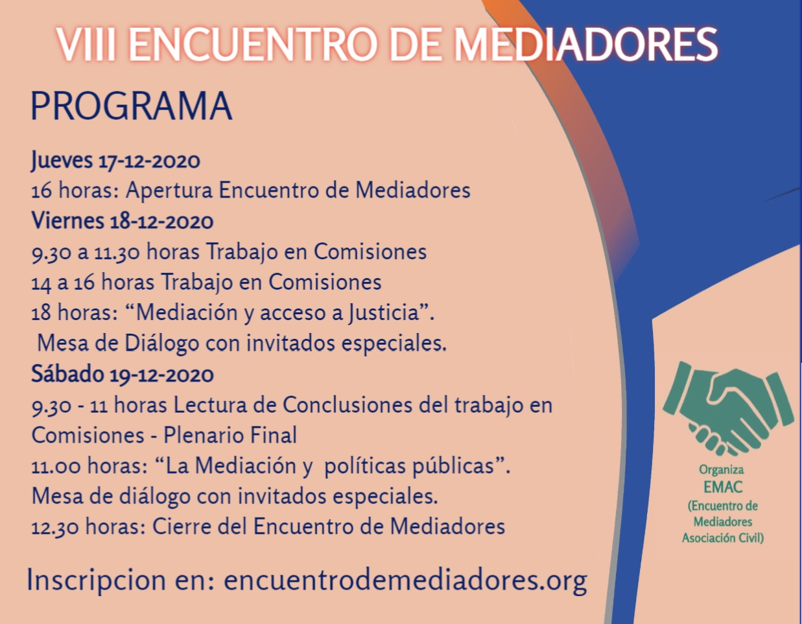
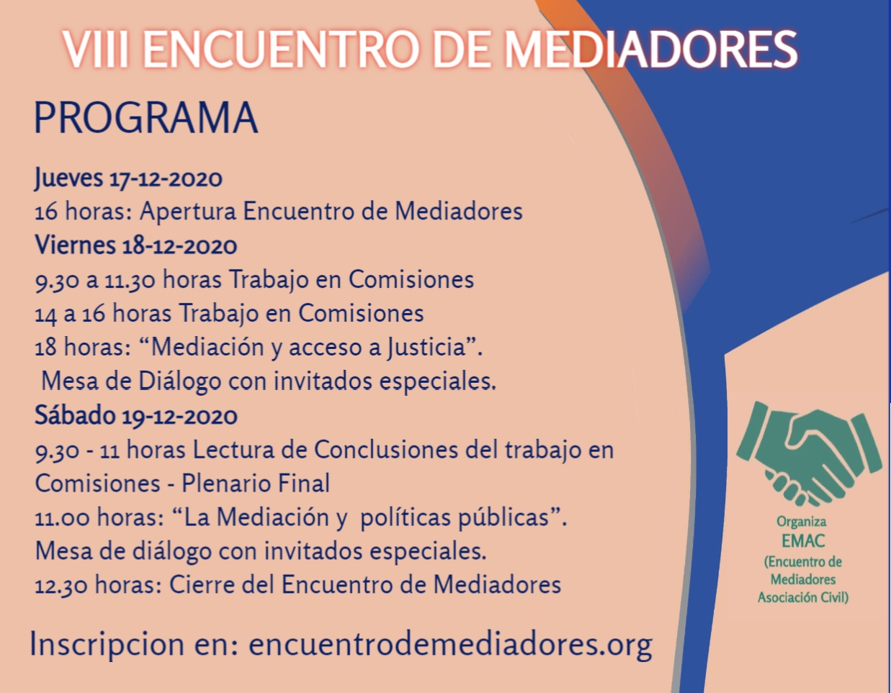

Programa del Encuentro



Queridos colegas:
Tenemos el agrado de invitarlos a participar del VIII Encuentro de Mediadores, a celebrarse los días 17, 18 y 19 de diciembre de 2020, sobre la temática de “Mediación y Acceso a Justicia como política pública”.
Este espacio nació en el 2012 con el primer encuentro en Santa Teresita, y es un ámbito generado por y para mediadores en el cual nos reunimos para debatir entre todos, compartir experiencias y generar propuestas para afrontar dificultades y que aporten al crecimiento de la mediación.
Por ello, la principal modalidad de trabajo de estos encuentro es el trabajo en comisiones, donde todos los participantes podemos aportar nuestro conocimiento y vivencias en busca de propuestas superadoras, culminando con la elaboración de un documento que las recepte y se de a publicidad en todos nuestros ámbitos de trabajo
Las comisiones donde se puede participar son: 1) .Campos de acción y materias mediables, 2) Honorarios y el contexto judicial y 3) Mediación a distancia. También contaremos con mesas de diálogo con invitados especiales.
Aprovechando la posibilidad que nos da esta virtualidad impuesta, de reunirnos sin tener que movilizarnos físicamente, los esperamos en este espacio de dialogo y participación
Saludos a todos y esperamos poder encontrarnos pronto!
Estos son los temas que debatiremos en las distintas comisiones

"Hablando con Jueces sobre Mediación" Miércoles 26/8/2020
Moderadores: Javier Poggi - Silvina Caisson
Reiteramos el agradecimiento a los Dres. Rodrigo Bionda y Paulo A. Maresca, jueces del fuero civil y comercial de la Provincia de Buenos Aires, por haber compartido esta actividad y su vision innovadora con nosotros, y legitimar nuestra labor como mediadores.
Esto dijo en sus redes el Dr. Bionda sobre nuestra actividad:

Primera parte, sobre Ejecución de Honorarios a cargo del Dr. Juan Manuel Pereyra, mediador de Lomas de Zamora.
Segunda parte sobre NULIDADES, a cargo del Dr. Leonardo Valsecchi, mediador de Avellaneda - Lanus.
Tercera parte sobre APELACIONES, a cargo del Dr. Enrique Laplane, mediador de La Matanza.
Ejecución, nulidad y apelación de sentencias regulatorias por Zoom - 17/7/20 a las 18.30 hs

Este jueves 8 de julio de 2020 en el marco del Ciclo de Conversaciones con jueces, organizado por E.M.A.C. (Encuentro de Mediadores), Asociación Civil, se llevó a cabo la conversación con el Dr. Paulo A. Maresca, titular del Juzgado 9 de 1º Instancia en lo Civil y Comercial del Departamento Judicial de General San Martín, sobre el tema: "LA MEDIACIÓN Y LAS AUDIENCIAS REMOTAS A LOS OJOS DE UN JUEZ".Agradecemos la oportunidad de haber escuchado sobre las nuevas dinámicas que despliega en su juzgado asi como también la mención del trabajo de los mediadores antes, durante y después de llevar adelante las audiencias, y la importancia de la mediación como elemento pacificador y de acceso a justicia, y que dicho trabajo esté bien remunerado.